겉은 고기, 속은 콩. 대두단백으로 기존 가공육의 식감과 맛을 그대로 재현한, 가장 발전된 식물성 대체육.Meat on the outside, soy on the inside. A plant-based meat that closely replicates the taste, texture and eating experience of conventional processed meat.
비우는 음식이 아닌, 완성하는 음식Not Food That Takes Away, but Food That Completes.
고기를 포기하는 것이 아니라, 고기를 넘어 식물성으로 더 나은 완성도를 추구합니다. 맛과 식감, 영양까지 놓치지 않는 식물로 완성시키는 다음 세대의 고기를 만듭니다.We believe choosing plant-based food is not about giving up meat. It is about going beyond meat to pursue something better — creating the next generation of meat through plants, without compromising on taste, texture, or nutrition.
대디푸드가 말하는 아빠는 유행을 좇기보다 기준을 지키는 사람입니다. 가족에게 권할 수 있는 음식, 다음 세대까지 생각하는 선택을 고민합니다.To DADDYFOOD, a “Dad” is someone who stands by his standards rather than simply following trends. He thinks carefully about the food he can proudly serve to his family and the choices that will matter for generations to come.
그래서 대디푸드의 브랜드인 JANUSOY는 비건을 설교하지 않습니다. 대신 더 맛있고, 더 만족스럽고, 더 책임 있는 새로운 기준의 음식을 제시합니다.That is why JANUSOY, a brand by DADDYFOOD, does not preach veganism. Instead, we offer a new standard of food — more delicious, more satisfying, and more responsible.
다음 세대를 먼저 생각하는, 기준 있는 아빠의 음식. JANUSOYFood with standards, made by a Dad who thinks of the next generation first. JANUSOY
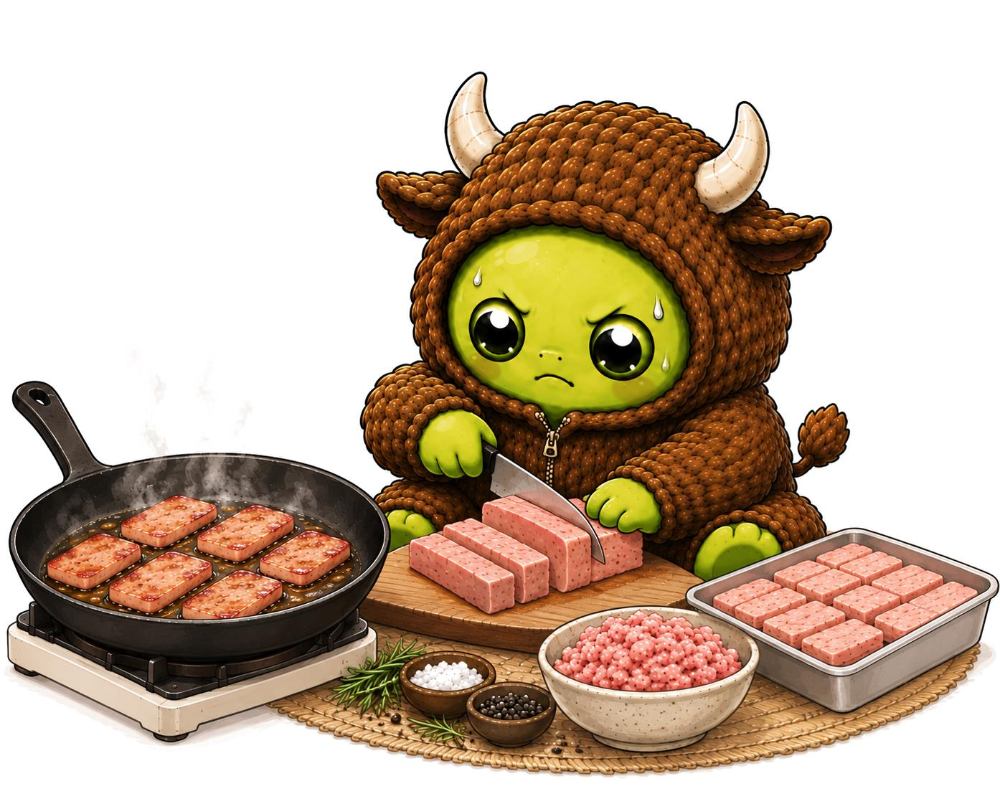
+ THE NAME
JANUS고대 로마 신화의 ‘두 얼굴의 신’The two-faced god of ancient Roman mythology
시작과 끝Beginnings & Endings
변화와 전환Transitions
+
SOY콩The soybean
본질은 콩Soy at its core
모습은 고기Meat in its form
=
JANUSOY 야누소이
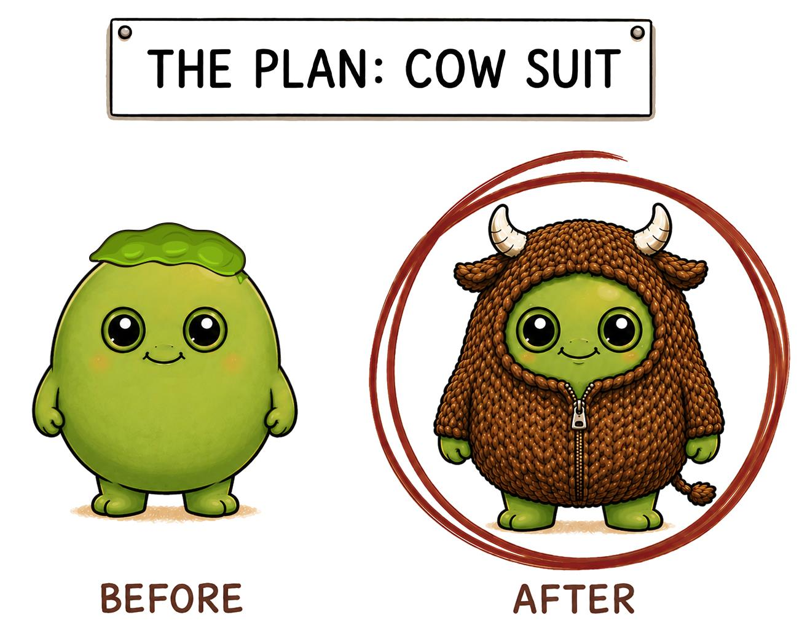
“속지 마세요. 콩입니다”겉은 고기, 속은 콩.“Meat Face. Soy Heart.”Meat on the outside. Soy on the inside.
두 얼굴의 신인 야누스처럼, 본질은 콩이지만 고기의 모습을 하고 있는 양면성을 브랜드 네이밍과 스토리로 전개했습니다.Like Janus, JANUSOY embodies a duality: its true essence is soy, yet it takes the form of meat. This duality is at the heart of our brand name and story.
고기의 새로운 기준을 제시하고 변화시키는 철학과 동일하게, 콩으로 고기를 만드는 변환과 전환을 표현한 브랜드 스토리입니다.Just as our philosophy seeks to redefine the standards of meat, JANUSOY represents the transformation of soy into meat — a story of transformation and transition for the next generation of food.
＊ 콩은 소고기도 돼지고기도 닭고기로도 변할 수 있습니다.＊ Soy can take the form of beef, pork, or chicken.
+ BRAND STORY
외면받던 콩들의 변신 대작전The Great Disguise of the Overlooked Soybeans
THE PLAN: COW SUIT
01
콩.Soybean.
누군가에게 외면 받던 콩The humble soybean, too often overlooked
식사는 끝났지만 우리의 식탁에서 남아있는 콩 요리들. 지나친 육가공 위주의 식단에 우리의 건강이 위협 받고 있습니다.Even after the meal is over, soy-based foods are left behind on our tables. As our diets become increasingly reliant on processed meat, our health is paying the price.
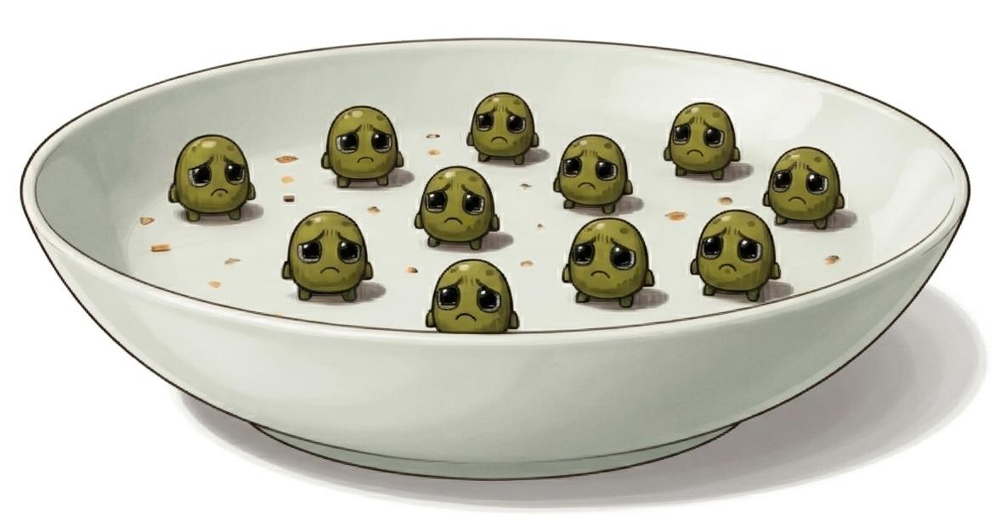
02
건강한.Healthful.
그 누구보다 건강하게 자란 콩들의 다른 생각A Different Thought from the Healthiest Soybeans
우리 콩들은 그 누구보다 건강하게 자라났기 때문에 더 이상 가만히 있을 수 없었습니다.Our soybeans were grown to be healthier than ever. They could no longer stand by and do nothing.
Non-GMO
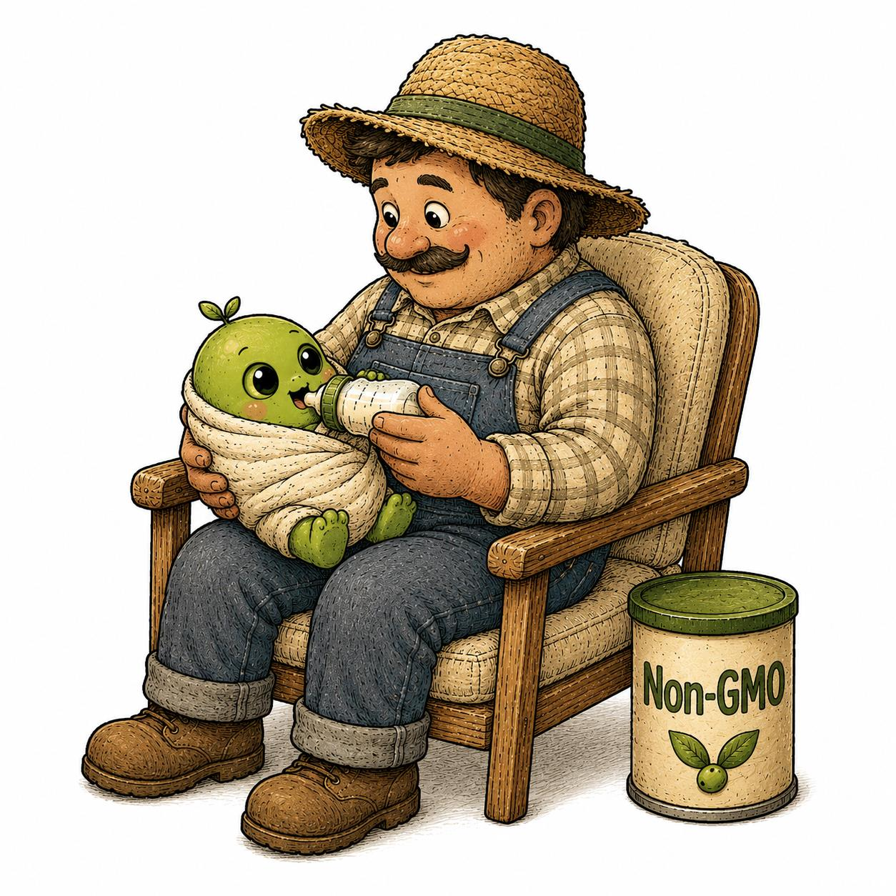
03
변신.Disguise.
야누스 같이 두 얼굴을 가지게 된 콩들Like Janus, our soybeans have discovered a second face.
콩들은 영양은 그대로이지만 더 맛있고 누구나 좋아하는 식감으로 변하기 위해 소와 돼지 그리고 닭으로도 변신하기로 결정했습니다.Although they retain all the nutritional value of soybeans, they decided to transform into cows, pigs, and chickens to create delicious flavors and textures that everyone can enjoy.
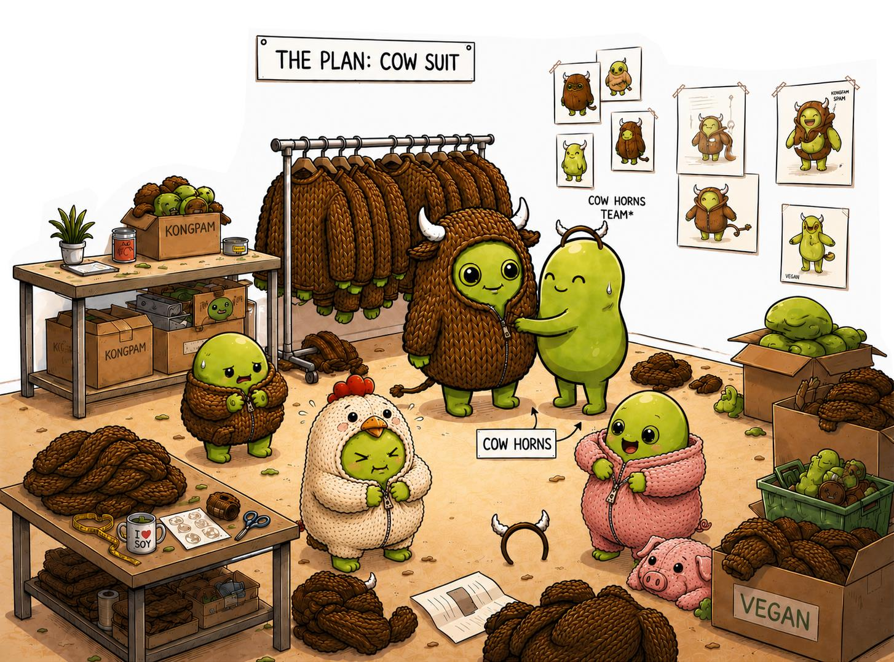
04
정성과 노하우로 만드는 숙련자들.Crafted with Expertise and Dedication.
건강은 기본, 맛과 식감까지 책임을!Health Comes First, Without Compromising on Taste or Texture
콩들은 겉모습 뿐만이 아니라 우리가 좋아하던 그 맛과 식감을 그들만의 노하우와 정성으로 육가공 제품처럼 만들어냅니다.We go beyond replicating the appearance of conventional processed meat, carefully recreating its familiar taste and texture through our expertise and craftsmanship.
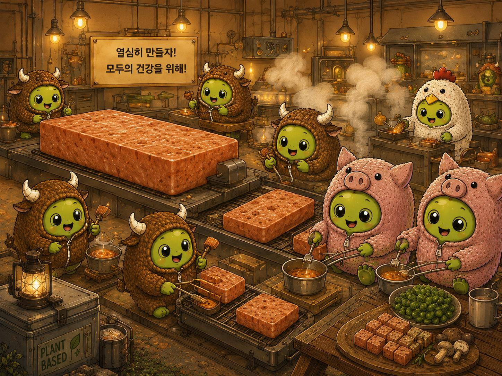
05
행복한 콩의 변신.The Happy Transformation of Soybeans.
알고서도 행복한 맛A Familiar Taste That Brings Happiness
콩들의 변신으로 만들어낸 식물성 대체육 식품들은 누구나 알면서도 익숙한 맛으로 행복한 식사를 선사합니다.Through the transformation of soybeans, we create plant-based meat alternatives with familiar flavors that everyone knows and loves — bringing a happier dining experience to every meal.
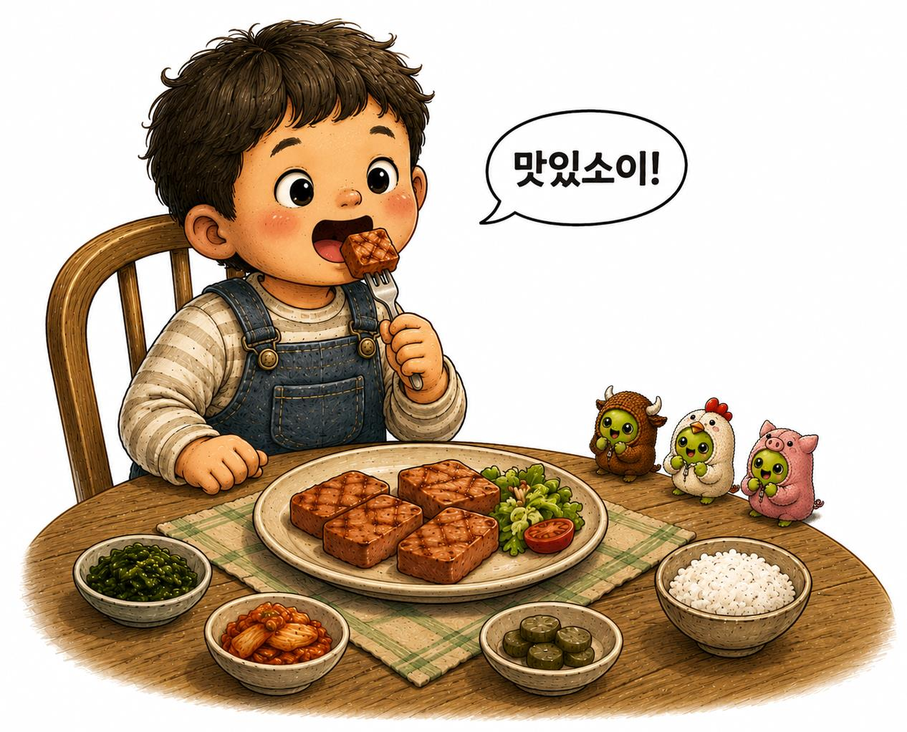
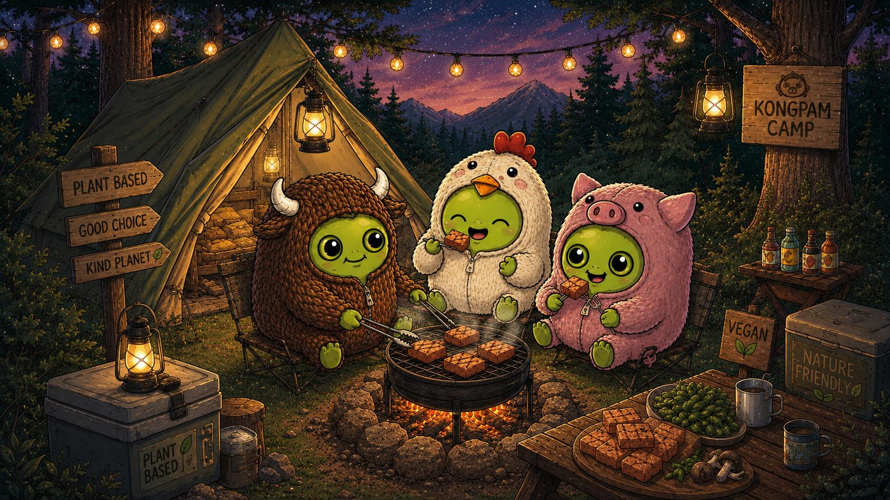
06
언제나 건강하고 맛있게.Healthy and Delicious, Always.
++ PRODUCTS
야누소이 KONG 시리즈JANUSOY KONG Series
우리가 알고 있는 그 맛The Taste You Know and Love
야누소이의 콩(KONG) 시리즈는 우리가 익숙하게 먹어오던 그 맛과 모양으로 만들었습니다. 런천미트, 너겟, 고기튀김 등 익숙하지만 건강하게!JANUSOY’s KONG Series is crafted to recreate the familiar flavors and forms of the foods we have always enjoyed — from luncheon meat and nuggets to meat-style fried products, made with a healthier, plant-based approach.
탄수화물이 주가 되는 떡과 식물성 단백질의 함량이 높은 야누소이가 만나 영양과 맛까지 밸런스를 맞춘 새로운 떡.Traditional tteok, primarily composed of carbohydrates, meets JANUSOY’s protein-rich plant-based ingredients — a new generation of tteok that balances nutrition and taste.
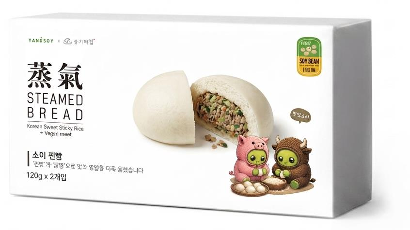
소이 찐빵Soy Steamed Bread
STEAMED BREAD · 120g × 2
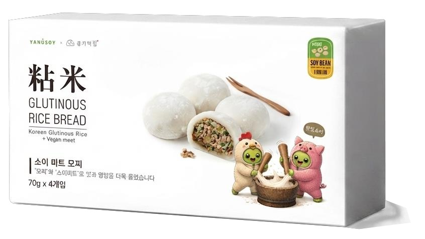
소이 미트 모찌Soy Meat Mochi
GLUTINOUS RICE BREAD · 70g × 4
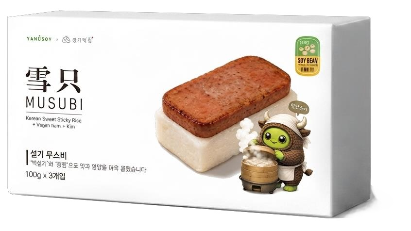
설기 무스비Seolgi Musubi
MUSUBI · 100g × 3
HALAL
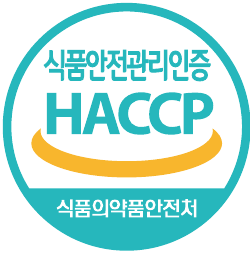
HACCP
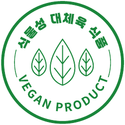
VEGAN
NO콜레스테롤, 트랜스지방Cholesterol, Trans Fat
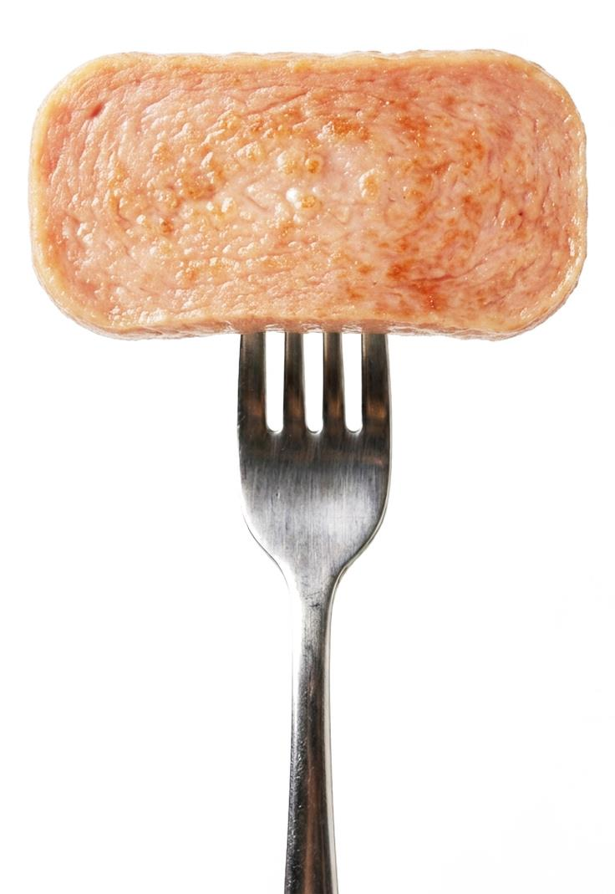
++ TECHNOLOGY
야누소이 노하우와 기술력JANUSOY Expertise & Technology
탄탄한 질감과 육즙까지 표현Firm Texture, Juicy Bite
01
대두단백 + 메틸셀룰로오스Soy protein + methylcellulose
야누소이의 제품들은 대두단백과 메틸셀룰로오스 기반으로 만들어집니다.JANUSOY products are formulated with soy protein and methylcellulose as their core ingredients.
02
60℃ 이상에서 더 단단하게Firmer above 60°C
둘의 조합을 기반으로 60도 이상 가열 시 조직들은 더욱 응집하여 단단해집니다.Through the optimized combination of the two, the protein structure becomes increasingly cohesive and firm when heated above 60°C.
03
기름기를 안에 가둔 육즙Juices locked inside
기분 좋은 기름기를 안에 가두어, 한 입 베어 물면 육가공 제품에서 느끼던 질감과 육즙의 표현을 바로 경험하실 수 있습니다.Desirable oils are retained within the matrix, so every bite delivers the firm, satisfying texture and juicy mouthfeel traditionally associated with processed meat.
++ ON THE TABLE
무엇이든 가능한 응용요리Versatile Applications
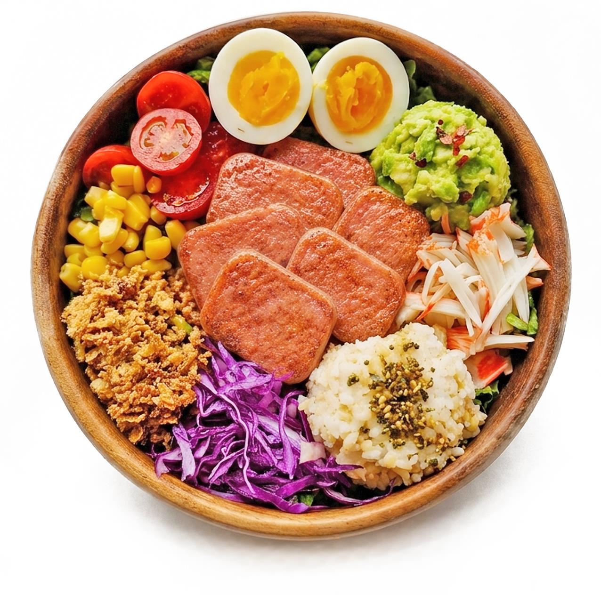
샐러드에서 한식까지From Fresh Salads to Korean Cuisine
야누소이의 제품들은 끓는 온도에서도 맛이나 모양의 변형이 없기 때문에 어느 요리에도 응용할 수 있습니다.JANUSOY products maintain their flavor, shape, and texture even at high cooking temperatures, making them highly versatile across a wide range of dishes.
샐러드Salad
무스비Musubi
파스타Pasta
부대찌개Budae-jjigae
만두Dumplings
짜장면Jajangmyeon
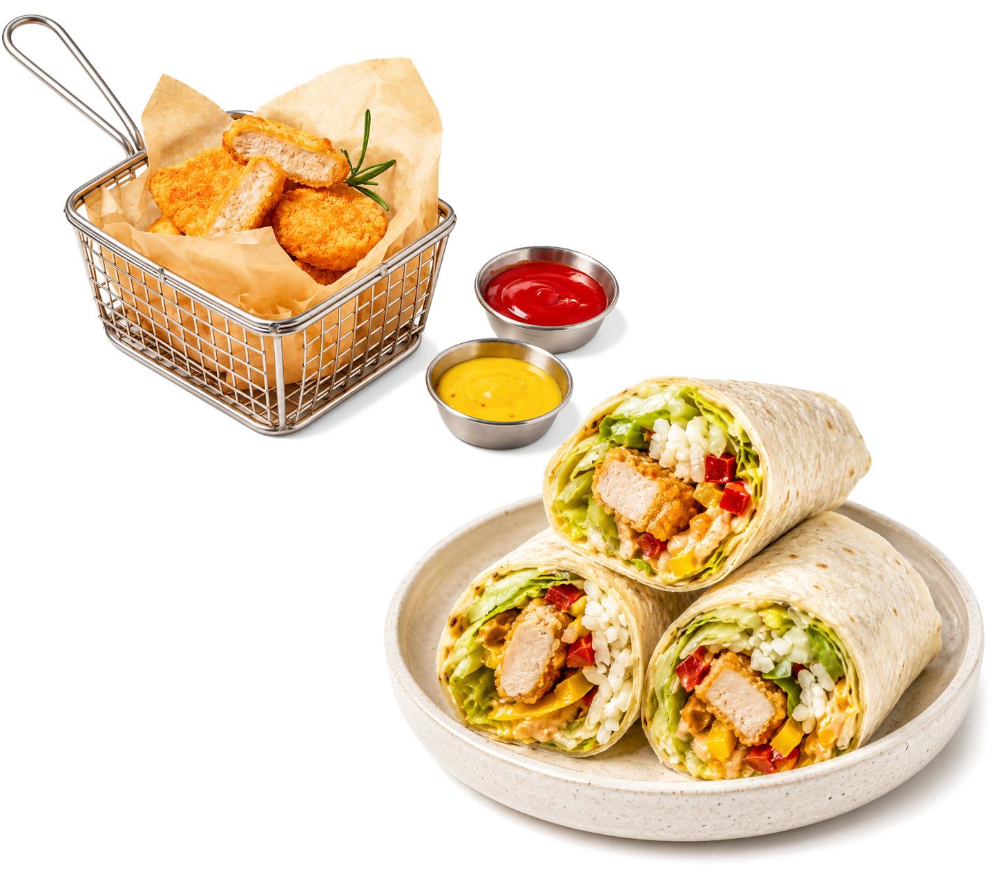
아이들 간식에서 술안주까지From Kids’ Snacks to Appetizers and Bar Bites
그 자체만으로도 아이들 간식 또는 술안주로 활용이 가능합니다. 햄버거나 또띠아 같은 요리에 활용한다면 완벽한 한 끼 식사로도 손색이 없습니다.Versatile enough to be enjoyed on their own as a snack for children or a savory accompaniment to drinks — or in burgers and tortilla wraps as a satisfying, complete meal.